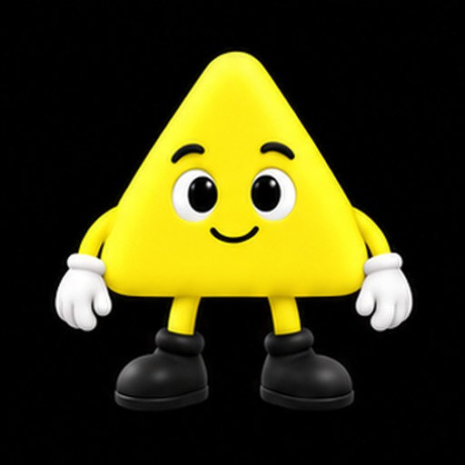
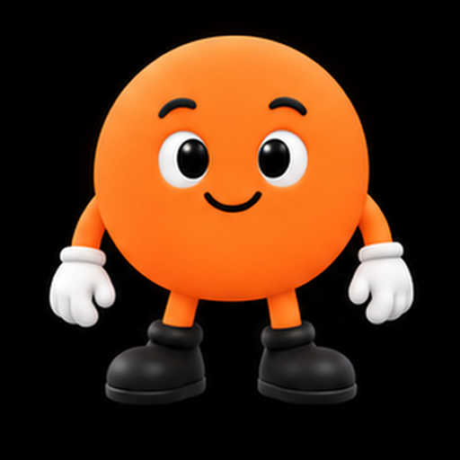
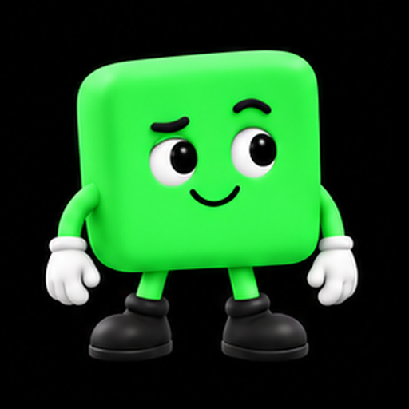
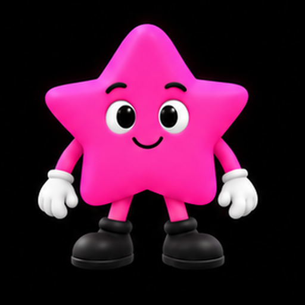
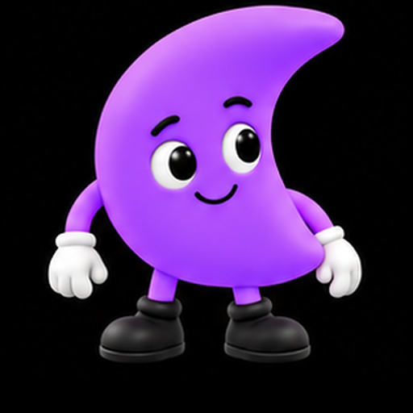
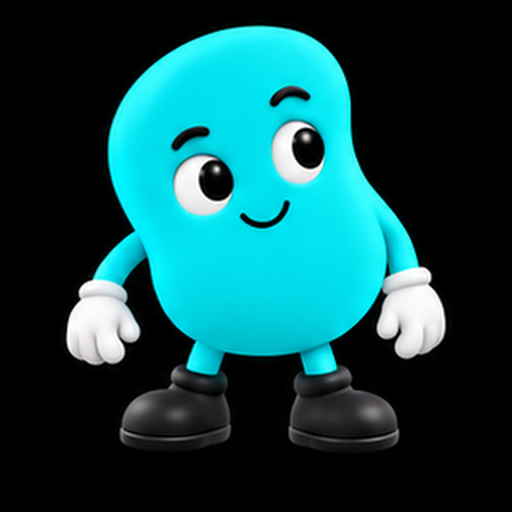
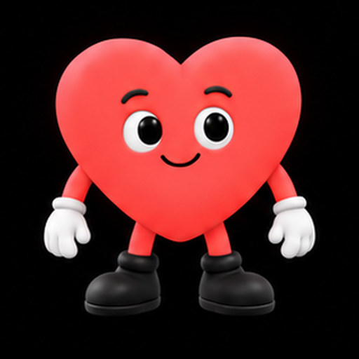
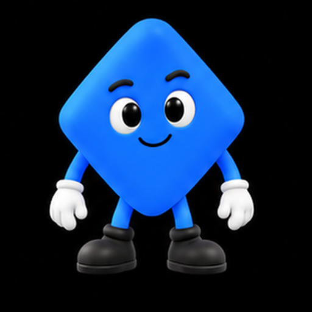

Character collection
AI Avatars
Characters made of light, texture, and motion.
 Open SkeletonNine emotional reactions plus idle, thinking, and answering. Play the round mechanical face and download MP4 or GIF clips.
Open SkeletonNine emotional reactions plus idle, thinking, and answering. Play the round mechanical face and download MP4 or GIF clips.
 Dot flockA round face made of moving dots, with fuller eyes. Combine 10 emotions, 10 activities, and 6 short reactions.
Dot flockA round face made of moving dots, with fuller eyes. Combine 10 emotions, 10 activities, and 6 short reactions.
 Red eyeA luminous glass eye that responds through its aperture, gaze, and light. Shares the full expression and reaction set.
Prismatic lensesSix character states, six palettes. Compare idle, listening, talking, thinking, writing code, and complete.
Ten motion ideasExplore liquid forms, eclipses, ribbons, an hourglass, fireflies, radar, helix, tide, bloom, and eyes.
Red eyeA luminous glass eye that responds through its aperture, gaze, and light. Shares the full expression and reaction set.
Prismatic lensesSix character states, six palettes. Compare idle, listening, talking, thinking, writing code, and complete.
Ten motion ideasExplore liquid forms, eclipses, ribbons, an hourglass, fireflies, radar, helix, tide, bloom, and eyes.

TriangleShape companion · A four-second idle animation and 16 expression and activity poses.
CircleShape companion · A four-second idle animation and 16 expression and activity poses.
SquareShape companion · A four-second idle animation and 16 expression and activity poses.
StarShape companion · A four-second idle animation and 16 expression and activity poses.
CrescentShape companion · A four-second idle animation and 16 expression and activity poses.
BeanShape companion · A four-second idle animation and 16 expression and activity poses.
HeartShape companion · A four-second idle animation and 16 expression and activity poses.
DiamondShape companion · A four-second idle animation and 16 expression and activity poses.Interactive visual studies · No account needed